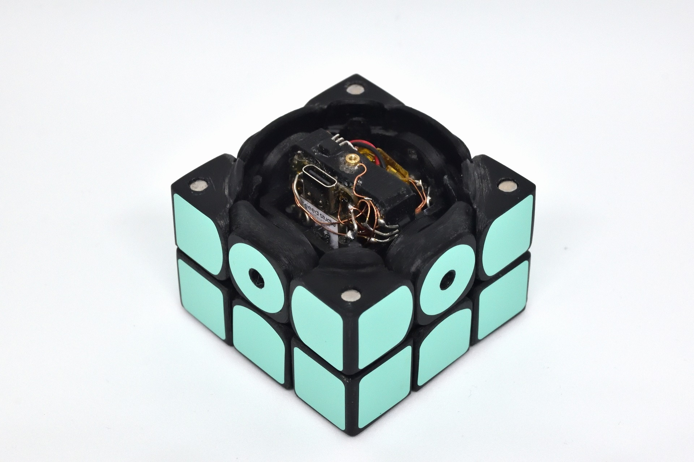
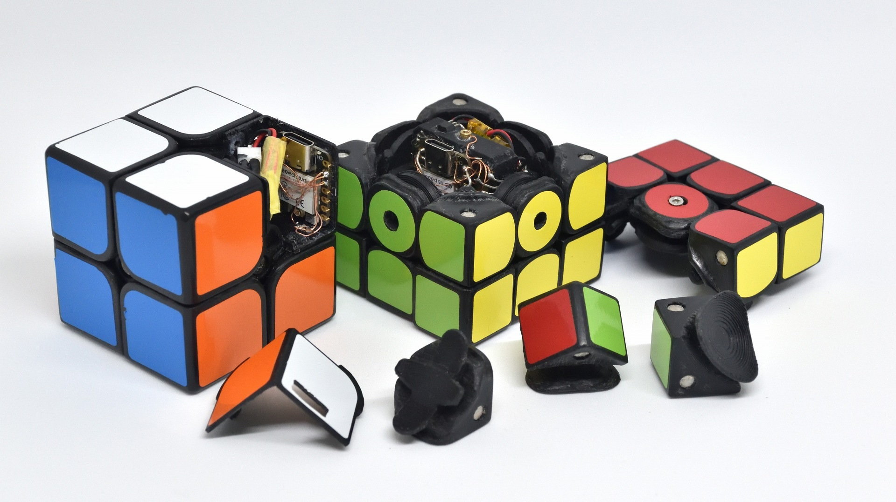
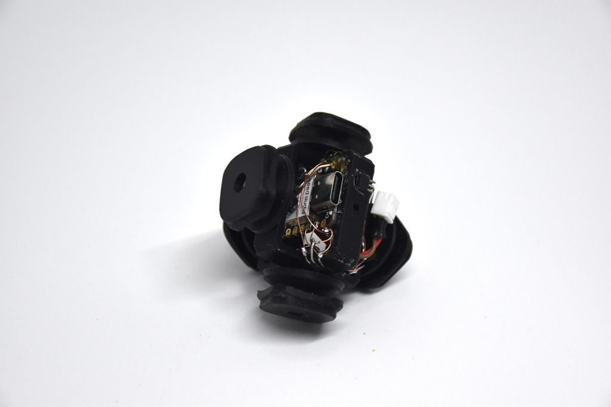
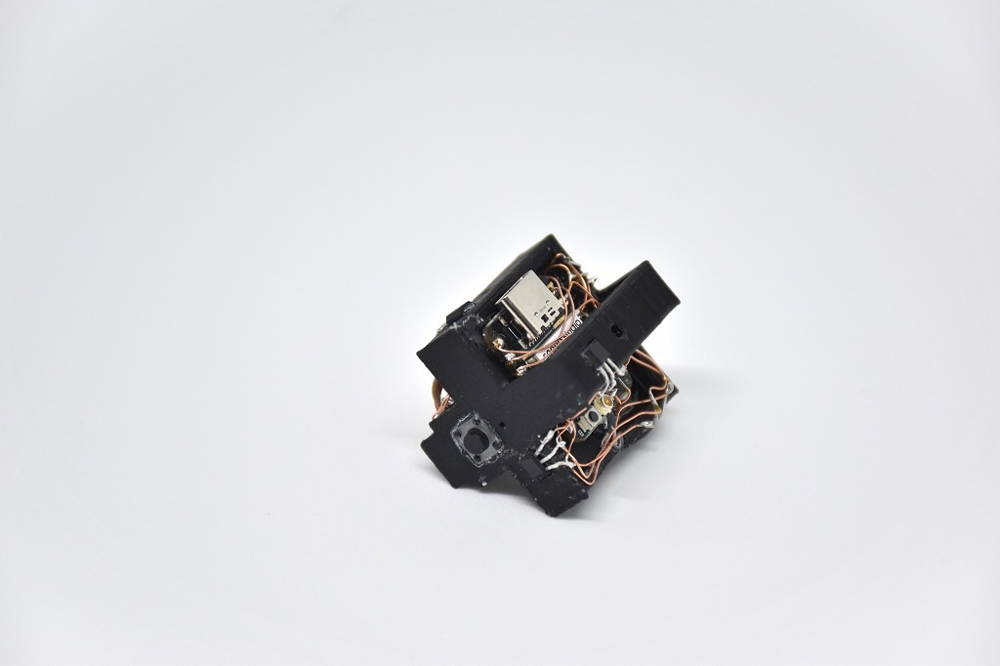
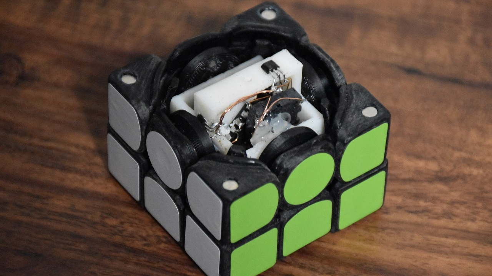

CuYu
立体パズル型楽器 (2021-2024)
自作の立体パズルに電子回路を搭載し、回すと音が鳴る楽器にしました。通常の3x3x3版に加え、2x2x2版も制作しました。
パズルを揃えることがそのまま音楽になるほか、「プロっぽく回すだけ」で、様々な音楽を奏でることができます。
パズルは3Dプリンタで制作し、内部にESP32C3マイコンとホールセンサを搭載しました。無線によって外部スピーカと通信し、音を鳴らします。専用充電器による外部給電にも対応しています。
技育展2024 ウイングアーク1st賞 受賞





